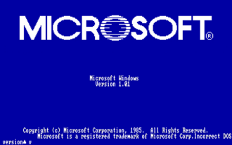
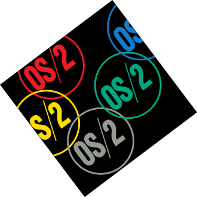
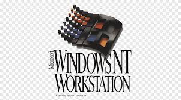
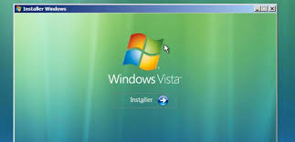

La version 1.0 fut annoncée au grand publix par Microsoft en novembre 1983

page wikipédia de windows 1.0Windows 2.0 est sorti le 1er novembre 1987 ontrairement à son prédécesseur, il permettait aux fenêtres de se superposer et de couvrir la barre des tâches (qui devint le « bureau »).
 page wikipédia de windows 1.0
page wikipédia de windows 1.0
indows 3.0 est la troisième version du système d'exploitation avec interface graphique de Microsoft Windows. Lancée le 22 mai 1990, elle inclut par rapport à la version précédente des améliorations significatives
 page de window 3.0
page de window 3.0
OS/2 est un système d'exploitation créé par Microsoft et IBM, qui a ensuite été développé par IBM seul. Le nom OS/2 signifie Operating System/2 (operating system signifie système d'exploitation en anglais)

page de OSLa lignée 3.x de Windows est une suite de systèmes d'exploitation 16 bits pour compatibles PC apparu le 22 mai 1990 dans la version 3.0. Orientée grand public, cette lignée de Windows est la première à être commercialisée directement sur un nouveau PC, et la première version à connaître un large succès.
 page de wikipedia de windows 3.x
page de wikipedia de windows 3.x
Windows NT 3.1 est la première version de Windows NT. Disponible en versions server et workstation, il est introduit sur le marché le 27 juillet 1993. Son nom a été choisi de façon à évoquer Windows 3.1, la version de Windows disponible à cette époque. Il est suivi de Windows NT 3.5 en septembre 1994.
 page wikipedia de windows nt 3.5
page wikipedia de windows nt 3.5
Windows NT 3.1 est la première version de Windows NT. Disponible en versions server et workstation, il est introduit sur le marché le 27 juillet 1993. Son nom a été choisi de façon à évoquer Windows 3.1, la version de Windows disponible à cette époque. Il est suivi de Windows NT 3.5 en septembre 1994.

page wikipedia de windows 95Windows NT 4.0, apparu en 1996, est une version professionnelle de Microsoft Windows orientée réseau et sécurité. Contrairement à Windows 95 elle ne repose pas sur MS-DOS. Son architecture est 100 % 32 bits.
 page wikipedia de windows NT 4.0
page wikipedia de windows NT 4.0
Windows 98 (nom de code Memphis) est un système d'exploitation de la société Microsoft, successeur de Windows 95. Le produit s'est décliné en deux versions principales : la première sortie le 25 juin 1998 puis une mise à jour de la précédente dite « Second Edition », sortie le 23 avril 1999.
 page wikipedia de windows 98
page wikipedia de windows 98
Windows 2000 est un système d'exploitation 32 bits développé et distribué par Microsoft. Le nom Windows 2000 est le nom commercial de la version 5.0 de Windows NT.
 page wikipedia de windows 2000
page wikipedia de windows 2000
Commercialisé sous le nom Windows Me, il est la dernière édition de la branche 9x du système d'exploitation destiné aux particuliers.
 page wikipedia de window ME
page wikipedia de window ME
Windows XP est un système d'exploitation multitâches, développé et commercialisé par Microsoft.
page wikipedia de windows xpWindows Vista est un système d'exploitation de la famille Microsoft Windows. Il a été mis sur le marché le 30 janvier 2007.

page wikipedia de windows vistaWindows 7 est un système d'exploitation de la société Microsoft, sorti le 22 octobre 2009.
 page wikipedia de window 7
page wikipedia de window 7
Windows 8 est la version du système d'exploitation Microsoft Windows commercialisée le 26 octobre 2012.
 page wikipedia de windows 8
page wikipedia de windows 8
Windows 10 est sorti le 29 juillet 2015. Le menu Démarrer est de retour.
 page wikipedia de windows 10
page wikipedia de windows 10
Windows 11 est une version majeure du système d'exploitation Microsoft Windows.
 page wikipédia de windows 11
page wikipédia de windows 11